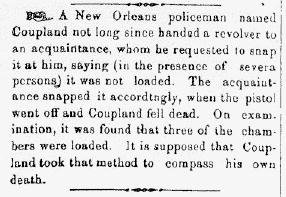
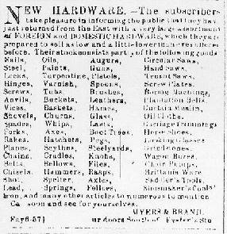

|
Column 1 often carried additional "non-news" items, such as paragraph-long
jokes or short anecdotes. The editor used these items primarily to fill space when the
paper lacked advertisements.

Columns 2-6 usually carried advertisements (though the news could extend into
column 3), mostly for goods available at the stores of local merchants, such
as the ad for Myers and Brand hardware store, which proudly announced they stocked
nails, oils, augurs, circular saws, steel, paint, guns, handsaws, locks, turpentine,
platois, along with a list of over fifty other items.

|